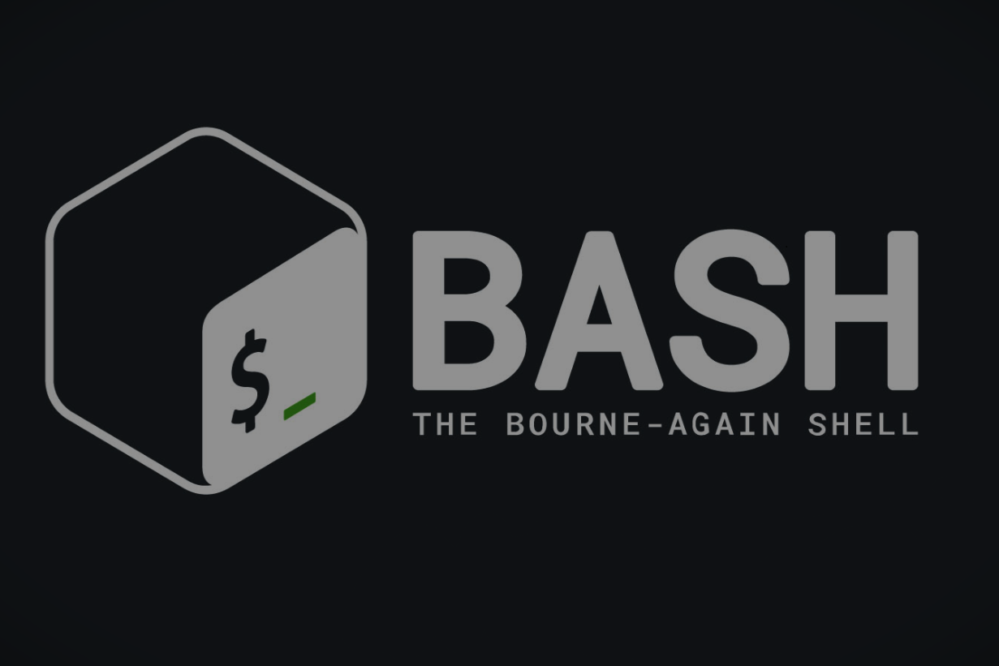
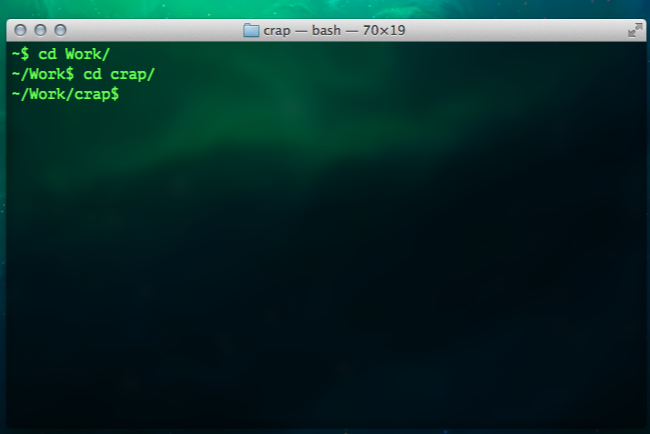
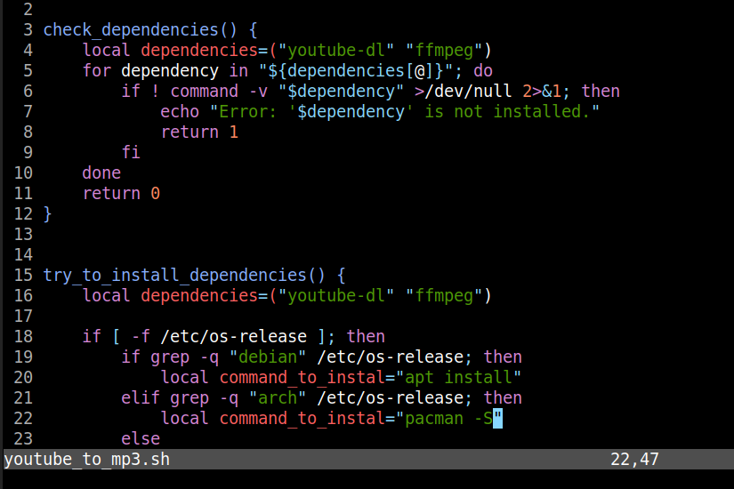

THE ENGINEERING BLOG
Clear, beginner-friendly guides on embedded systems, Git version control, Linux terminal scripting, web tools, personal finance, and human psychology.

SSD NVMe Firmware Development: The Complete Guide
From silicon SoC architecture to PCIe Gen5, NVMe queues, MSI-X, AXI crossbars, C compilation, RTL, and FPGA emulation: the definitive reference for SSD firmware engineers.
Human Psychology: 45 Laws & Theories Explained Simply
Bite-sized, simple explanations for 45 essential laws and biases of human behavior, each with an everyday real-world example and deep-dive reference link.

IPC Communication with SPM & CPM
A clear, visual guide to how processor cores talk to each other fast using private memory (SPM), shared memory (CPM), and safe Full and Empty checks.

Git Masterclass: The Software Engineer's Guide
Visual guide to Git: rebase vs merge, combining commits, fixing code conflicts, bringing back lost work, and answers to common beginner questions.

Mutual Funds 101: The No-Nonsense Investor Cheat Sheet
Learn mutual funds in plain English: CAGR vs. XIRR, index funds, fees, fund types (Large, Mid, Small Cap), and how to pick the right investments.

Bash Scripting: The Definitive Guide
Learn Bash scripting step-by-step: variables, the strict '=' rule, if conditions, loops, useful terminal tricks, and ready-to-use automation scripts.

Shell Prompt Customisation (PS1)
Make your Linux terminal prompt look awesome with colors, exit codes, and git branch names—without installing any slow plugins.

Mastering the Vim Editor
Learn how to use the fast Vim editor: moving around, editing text quickly, search and replace, shortcuts, and a beginner-friendly configuration.
Food & Nutrients: Modern Indian & Kerala Guide
An easy-to-read guide on healthy eating: daily nutrients your body needs, smart food combinations ('Eat This + That'), Kerala superfoods, common food myths, and an easy health calculator.